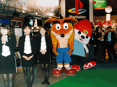
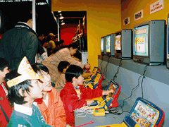
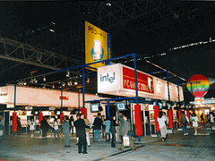

▲コンパニオンやキャラクターが来場者を出迎えた |
いよいよ、「東京ゲームショウ'98 春」が開幕しました。展示会場では、93の出展者による新作タイトルの体験コーナーやイベント、ノベルティなどの配布などが行われていました。 |
前回好評だったキッズコーナーも、規模を拡大して8ホールに開設。親子でゲームを楽しんだり、親子で昔懐かしい駄菓子を買い求める微笑ましい光景も見られました。キッズコーナーの来場者は前回よりも多く、2日間で20,719人を数えました。また、今回初めてPCコーナーを設けましたが、パソコンゲームファンには大好評でした。

▲キッズコーナーで楽しむ子供たち |

▲PCコーナー |
|